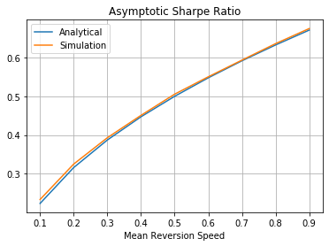

Expected Performance of a Mean-Reversion Trading Strategy - Part 1
A value strategy posits that the worth of an asset tends to oscillate around a more gradual, underlying trend. When an asset’s current value falls below this trend, it is deemed undervalued and becomes an attractive acquisition. Conversely, we considered it overvalued when it exceeds the trend, presenting an opportunity for short selling. In this exploration, we develop a simple model designed to estimate and elucidate the expected performance of such a strategy. This model encapsulates the essence of the quantitative value approach and provides practical insights into the dynamics of asset valuation and investment decision-making in today’s financial markets.
Model
At the core of this model lies the concept of log prices and fair values. Define \[p_t=\log{P_t}\] as the log price of an asset at time \[t\] and \[v_t=\log{V_t}\] the log fair value of the asset at time \[t\]. The valuation process is key to understanding this model, denoted as \[X_t = p_t - v_t\]. This process represents the difference between the market price and the fair value in logarithmic terms. When \[X_t>0\], it indicates that the market price \[P_t\] is above the fair value price \[V_t\] by \[X_t\]% and conversely, \[X_t<0\] indicates that the market price \[P_t\] is below the fair value. A value \[X_t=0\] signifies that the asset trades at its fair value.
The dynamics of \[X_t\] follow an Ornstein-Uhlenbeck process, a well-established method for representing mean-reverting behaviour. In this process, \[X_t\] reverts towards zero, representing the fair value in our context, with a certain speed of mean reversion \[\theta\] and a volatility \[\sigma\]. The initial condition is \[X_0 = 0\], which implies that the asset starts at its fair value. Mathematically, this process is described by the stochastic differential equation:
\[ \begin{equation}\label{eq:ou} dX_t = -\theta X_t dt + \sigma dW_t \end{equation} \]
This equation captures the essence of mean reversion: \[-\theta X_t dt\] pulls the value back towards the mean, while \[\sigma dW_t\] adds a random fluctuation, reflecting the inherent asset return volatility.
To analyze this process further, we utilize a few useful identities. First, we can express \[X_t\] as normally distributed with a mean of zero and a time-dependent variance.
\[ \begin{equation} X_t \sim N\left(0, \frac{\sigma^2}{2\theta}\left(1-e^{-2\theta t}\right)\right) \end{equation} \]
This distribution reflects how the variance of \[X_t\] evolves.
Lastly, for analytical convenience, we introduce \[s_t^2\], a scaling factor for the variance of \[X_t\]. By defining \[s_t^2 = (2\theta)^{-1}(\sigma^2 (1-e^{-2\theta t}) )\], we can standardize \[X_t\] such that
\[ \begin{equation}\label{eq:xdist} \frac{X_t}{s_t^2} \sim N(0, 1) \end{equation} \]
This standardization simplifies further analysis, allowing us to work with a standard normal distribution and facilitating a more straightforward interpretation and application of statistical methods.
Constant Fair Value \[\label{sec:case1}\]
In this section, we delve into the implications of assuming a constant fair value for the asset in this model. This assumption simplifies our understanding of the valuation process, \[X_t\], and its relationship to the asset’s log price, \[p_t\].
By considering the fair value, \[v_t\], as a constant, we essentially equate the change in \[X_t\] with the instantaneous log return of the asset, \[dp_t\]. This equivalence leads to an important insight: the log return of the asset, under this assumption, follows a mean-reverting process devoid of any drift component. It is a crucial simplification that allows us to focus on the mean-reverting nature of the asset’s price without the additional complexity of a drifting trend.
The strategy is continuously rebalanced and aims to exploit this mean reversion. The strategy operates by trading in opposition to the current valuation; specifically, it sells when the asset is overpriced (i.e., when \[X_t>0\]). The instantaneous profit and loss \[\pi_t\] at time \[t\] can be expressed as:
\[ \begin{equation} \pi_t = -X_t dp_t = -X_t dX_t \end{equation} \]
we then examine the cumulative PnL process
\[ \begin{equation}\label{eq:y} Y_t = \int_{0}^{t} \pi_u du = \int_{0}^{t}-X_u dX_u \end{equation} \]
with initial condition \[Y_0=0\], we integrate this expression to obtain:
\[ \begin{equation} Y_t = -\frac{X_t^2 - \langle X_t \rangle}{2} = \frac{\sigma^2 t - X_t^2}{2} \end{equation} \]
Equation \(\eqref{eq:xdist}\) implies that \[X_t^2 \sim s_t^2 \chi_1^2\] where \[\chi_1^2\] is a Chi-squared distribution with \[1\] degree of freedom. The expectation of \[X_t\] is \[s_t^2\], leading us to the distribution of \[Y_t\]
\[ \begin{equation}\label{eq:ydist} Y_t \sim \frac{1}{2}\left(\sigma^2t - s_t^2 \chi_1^2\right) \end{equation} \]
with its expected value being \[\mathbb{E}(Y_t)=\left(\sigma^2 t - s_t^2\right)/2\].
Expected Sharpe Ratio
We now focus on calculating the expected Sharpe ratio of the mean-reversion strategy, a key metric for assessing the performance of any investment strategy. We must understand the first two moments of the annualized Profit and Loss (PnL) process to do this.
The first moment, or the expected value of the annualized PnL over a time horizon \[t\], is derived as follows:
\[ \begin{equation} \begin{aligned}\label{eq:exp} \mathbb{E}\left[\frac{1}{t}\int_0^t \pi_u du\right] &=\frac{1}{t}\mathbb{E}\left[\int_0^t X_u dX_u\right] \\ &=\frac{1}{t}\mathbb{E}(Y_t) \\ &= \frac{1}{2}\left(\sigma^2 - \frac{s_t^2}{t}\right) \end{aligned} \end{equation} \]
This equation represents the average return of the strategy over the period \[t\]. It balances the constant volatility term \[\sigma^2\] with the decreasing impact of \[s_t^2\] as \[t\] increases.
The second non-central moment, or the variance of the annualized PnL, is
\[ \begin{equation} \begin{aligned}\label{eq:vol} \mathbb{E}\left[\frac{1}{t}\int_0^t \pi_u^2 du\right] &= \frac{1}{t}\mathbb{E}\left[\int_0^t\left(X_u dX_u\right)^2\right] \\ &= \frac{1}{t}\mathbb{E}\left[\int_0^t\sigma^2X_u^2du\right] \\ &= \frac{1}{t}\int_0^t \sigma^2\mathbb{E}(X_u^2)du \\ &= \frac{1}{t}\int_0^t \sigma^2s_u^2 du \\ &= \frac{1}{t}\frac{\sigma^4}{2\theta}\left(t + \frac{e^{-2\theta t}}{2\theta} - \frac{1}{2 \theta}\right) \\ &= \frac{\sigma^2}{2\theta}\left(\sigma^2 - \frac{s_t^2}{t}\right) \end{aligned} \end{equation} \]
The Sharpe ratio at horizon \[t\] is calculated as the ratio between the mean and the standard deviation of the pnl:
\[ \begin{equation}\label{eq:sr} \mathrm{SR}_t = \sqrt{\frac{\theta\left(\sigma^2 - \frac{s_t^2}{t}\right)}{2\sigma^2}} \end{equation} \]
Taking \[t\] to infinity yields the asymptotic annualized Sharpe ratio.
\[ \begin{equation}\label{eq:asr} \mathrm{SR} = \lim_{t\rightarrow \infty} \mathrm{SR}_t = \sqrt{\frac{\theta}{2}} \end{equation} \]
Figure 1 shows the asymptotic expected Sharpe ratio as a function of the mean reversion speed \[\theta\]. We produce the simulation results (shown in orange) by generating 1000 PnL paths of the strategy with \[t=100\] and \[\sigma=0.1\]. Each path is discretized into 252 trading days in a year. Different \[\sigma\] values are also tried and yield the same result.

Observations
The primary contributor to the expected annualized PnL is the term \[\sigma^2\]. This term originates from the quadratic variation \[\langle X_t \rangle\], a critical component in our model that reflects the strategy’s profit from trading effectively in fluctuating markets–buying when prices are lower and selling when they are higher. This aspect of the strategy, encapsulated by the quadratic variation, operates independently of the fair value estimations.
However, the expected returns are offset by the variance of the valuation gap \[\mathbb{E}(X_t^2)\]. This variance plays a dual role: it increases with the asset’s volatility and decreases as the speed of mean-reversion, \[\theta\], increases. This relationship implies that when the volatility is high relative to the speed of mean reversion, the valuation gaps may persist for extended periods, thereby increasing the holding costs of our positions.
Similarly, the asymptotic Sharpe ratio, a measure of risk-adjusted return, is shown to be directly proportional to the mean reversion speed \[\theta\] while remaining unaffected by \[\sigma\]. Equation \(\eqref{eq:sr}\) shows that \[\theta\] influences the volatility of the strategy’s PnLs. Meanwhile, an increase in mean reversion speed leads to reduced volatility of average PnLs, subsequently enhancing the Sharpe ratio.
Further exploration
A few more extensions of the model reveal further complexities when we introduce variations. If the unconditional mean is estimated with a constant bias, an intriguing phenomenon emerges: the expected PnL remains stable, but there is a noticeable increase in its variance. This increase is directly influenced by the asset’s volatility and the magnitude of the bias, leading to a consequential decrease in the expected IR of the strategy. Moreover, the model indicates that when the unconditional mean is estimated without bias but possesses a positive (or negative) correlation with the log price, the expected PnL is impacted adversely (or favourably).
A particularly notable finding from our analysis is the impact of correlation on the trailing estimates of fair value. We demonstrate that a positive correlation can occur with any trailing estimate, presenting a nuanced insight into the behaviour between the fair value and the log price. This aspect of the model underscores the complexity inherent in mean-reversion strategies and highlights the critical importance of accurate parameter estimation in maximizing the efficacy of such investment approaches.